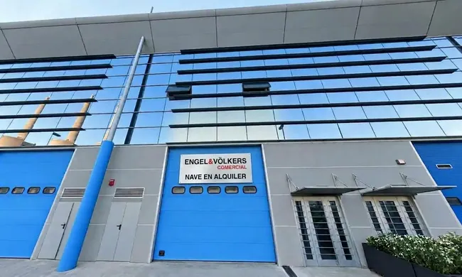
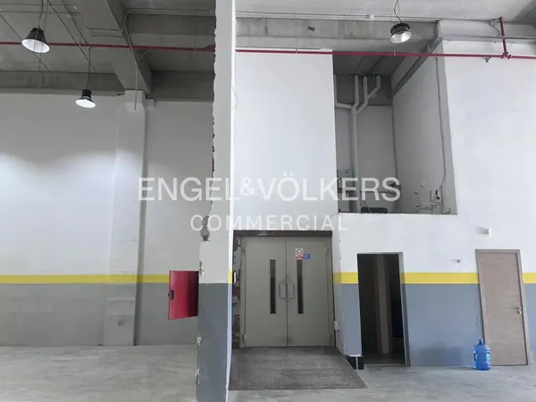
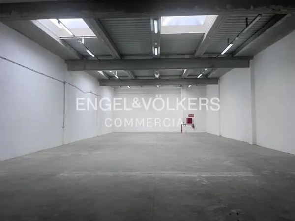

Plano · tocar un número de la lista lo marca acá
Letras: condiciones go/no-go · o: obra necesaria · números: lo que hay que medir o confirmar · c: lo que el chequeo de circulación marca hoy · trazos: el área o la franja de la cota · la línea azul: el largo libre a lo largo de la pista · ejes x/z: el origen de las cotas.
Condiciones go/no-go · si alguna sale mal, la nave se cae o hay que rehacer el layout
- Con margenDecide: ≥ 5,8 m libres bajo jácenas, cerchas, luminarias e instalaciones en la vertical de la plataforma: plataforma a 3 m + 2,4 m del rider + 0,4 m de instalaciones (PROGRAMA §1). Si da menos, se baja la plataforma (a lo medido − 2,8 m), nunca el run-out.Altura libre medida con láser sobre la plataforma (m):
9 notas del layout
fuente de la cota: foto (foto 02 = anuncio n.º 3: la jácena sobre el núcleo ocupa ≈8 % de la altura solera-forjado → ≈0,55 m de canto, ≈6,45 m libres; anuncio n.º 4, con el ancho de 5 m del portón como escala: dintel del portón a ≈5,0 m, encima la banda acristalada (≈5,0-6,1 m) y la jácena de fachada, con el intradós a ≈6,0 m y ≈0,9-1,0 m de canto; las jácenas interiores quedan a ≈6,2-6,5 m (cámara del anuncio n.º 2); se toma 6,4) · publicada 7,0 m hasta la cara inferior del forjado de P1 (anuncio 'altura libre 7 metros' y sección del plano)
riesgo: Altura: la regla de la plataforma se calculó con 6,4 m bajo jácena, estimados por foto. Hay que medir jácenas, luminarias y la guía del seccional: si la jácena descuelga más de 0,6 m, la plataforma baja.
riesgo: No entran en PB y se dejan fuera por la prioridad de PROGRAMA.md: trampolines (2 camas piden ≥3,05 × 10,4 m libres y ≥5 m de alto; la franja libre tiene 2,8 m de ancho y la P1 ≈4-4,7 m bajo jácena) y pad o mini rampa de 40-60 m². Meterlos en PB exigiría recortar la pista por debajo de lo que tiene o quitar vestuarios. El pad podría ir a la P1.
riesgo: Gym en PB: el pedido del usuario entra con 21,4 m² (2,67 × 8,0, hasta la cara norte del núcleo; 23,0 antes de rp-b, que corre la franja para la salida lateral), por debajo de los 25-35 m² del programa, y sin banco dibujado. Para hacerle sitio, las taquillas pasan a 3 alturas en la entrada, el taller de tuning y el almacén de módulos suben a la P1 por el montacargas (1.500 kg, cabina de 2,0 × 2,5 m que no admite tubos de 4-5 m: esos se guardan bajo la plataforma o en el patio) y salen de la PB el banco de calzarse y las vending. El validador avisa «falta taller o almacén». El gym queda en PB, sin escalones, abierto al pasillo de retorno. Un gym de 30-40 m² con luz natural cabría en la P1, con ascensor, pero el visor no la modela.
riesgo: Limitaciones del visor (v2). Pinta el techo de chapa con correas, no el forjado de placas con jácenas. El portón sale azul también por dentro, donde es blanco. No dibuja la franja amarilla ni el zócalo de pilastras y núcleo, marca las llagas del bloque más que las fotos y deja la P1 como si no existiera. Tampoco puede dar a la jácena de fachada su canto de ≈0,95 m, porque beamDepth es uno solo para todos los pórticos. Las puertas del núcleo salen como hojas de madera de 0,9 m abiertas (la del montacargas es doble, gris y batiente). El conducto textil a 5,95 m entra en el núcleo por su cara norte. La escalera sale con sus 2 tramos y descansos, pero la barandilla de la plataforma se abre en todo el lado que toca la zona y no solo en la meseta. El descanso intermedio va sin barandilla del lado de la rampa, a 0,2 m del faldón, y entre meseta y plataforma queda la franja de 0,2 m sin chapa de paso. En obra: barandilla de la plataforma junto al tramo alto, chapa de transición entre meseta y tablero, barandilla del descanso, y conductos y luminarias fuera de la vertical de la plataforma y de la rampa alta.
supuesto: Altura libre de 6,4 m bajo jácena (estimada por foto) y 7,0 m bajo forjado. Plataforma a 3,0 m (3,0 + 2,4 = 5,4 ≤ 6,4 − 0,4): queda entre el testero y la primera jácena (≈7,1 m), con 3,4 m libres sobre el tablero. Con la pista acortada por la aleta (match2), 3,0 m es lo que entra con una sola terraza sin pasar de 30° (con 3,2 m la máxima sube a 30,8° y con 3,4 m pasa de 32°).
supuesto: Núcleo, escalera protegida, vestíbulo de calle, cuarto ELEC y patinillo se dibujan como wc-block, el único volumen cerrado existente del esquema; la etiqueta dice qué es cada uno. La escalera no va como stairs-existing porque el visor la pintaría abierta y en las fotos solo se ve el muro de su caja REI-90. El núcleo va en 5 wc-block con su altura (7,0 m hasta el forjado salvo los aseos, de 2,8 m con el hueco encima) y la puerta en la cara y la posición que dan las fotos y el plano.
supuesto: Las taquillas pasan a 3 alturas (puertas de 0,30 × 0,50 × 0,60) en vez de 2 para que las 50 quepan en los 5,2 m de muro ciego de la caja de escalera. Caben mochila, calzado y chaqueta doblada; las chaquetas largas, en las perchas de los vestuarios.
supuesto: medir en la visita: el largo de la aleta desde la cara oeste del núcleo (≈2,1 m; extremo a x ≈ 6,1 de la medianera izquierda, entre ≈5,95 y 6,35 según las fotos) y su grueso (≈0,35); si llega al forjado o muere en la jácena, y si es estructural (sostiene la jácena del pórtico de 21,5-24,3 m o es un cerramiento del montacargas).
- Se decide en la visitaDecide: ≥ 22,65 m en línea recta a lo largo de la pista (plataforma 2 m, rampa, llano y el final más largo, run-out ≥ 8 m), del muro detrás de la plataforma a lo existente (aleta de obra existente) después del final. Si da menos, se acorta la rampa o el llano y se baja la plataforma, nunca el run-out.Distancia del muro a lo existente (aleta de obra existente), a lo largo de la pista (m):
2 notas del layout
supuesto: medir en la visita: el largo de la aleta desde la cara oeste del núcleo (≈2,1 m; extremo a x ≈ 6,1 de la medianera izquierda, entre ≈5,95 y 6,35 según las fotos) y su grueso (≈0,35); si llega al forjado o muere en la jácena, y si es estructural (sostiene la jácena del pórtico de 21,5-24,3 m o es un cerramiento del montacargas).
supuesto: medir en la visita: la distancia de la cara interior del testero a la cara norte del núcleo y de la aleta (layout 24,3; el plano da ≈24,1-24,2). El paso del final del run-out (z 22,9-24,3) sigue en 1,2 m con la cara en 24,1; si está más al norte, la pista se acorta otra vez desde la terraza.
- Se decide en la visitaDecide: Dos salidas o más a la calle o a un espacio exterior seguro, con recorridos de evacuación ≤ 50 m (CTE DB-SI 3 §3, tabla 3.1), y sus puertas con ≥ 0,80 m de paso y 2,10 m bajo el dintel. Cada salida nueva solo vale si el muro da a la calle o a un patio con salida y la propiedad deja abrirla (las obras, en «Obra necesaria»).
- acceso acristalado de 5 m en la arista 2 (hueco 0, x 5,2 · z 38,72): cambia (hoy es portón seccional: hay que hacer la obra) · obra o1
- acceso acristalado de 2,2 m en la arista 2 (hueco 1, x 9,65 · z 38,4)
- salida de emergencia de 1 m en la arista 1 (hueco 3, x 11 · z 9): nueva (hay que abrirla) · obra o2
Salidas confirmadas (cuáles, a dónde dan, ancho de paso):7 notas del layout
riesgo: Evacuación (CTE DB-SI 3 y PROGRAMA §3): testero y laterales son ciegos y las dos salidas de la fachada (el portón y la puerta acristalada por el núcleo sectorizado) quedan a ≈4 m entre sí: desde la plataforma no hay recorridos alternativos (DB-SI 3 tabla 3.1, 25 m) y con el portón cerrado (DB-SI 3 §6: un seccional no es salida) queda una sola, a 46,7 m (≤ 25 con una). Propuestas de rp-b (24/11, en shell.openings, proposed; decisiones de negocio): (1) entrada de público por el hueco del portón con un frente acristalado y puerta automática corredera, el portón por fuera abierto en horario; (2) salida de emergencia en la medianera derecha, al fondo del paso de 1,20 m entre los vestuarios (desde la entrada se llega por el enlace de 1,10 m del final del run-out), a la nave vecina. Obra necesaria: el hueco en el cortafuegos y, para que sea salida de planta (DB-SI Anejo A: la vecina es otro establecimiento y otro sector), un vestíbulo de independencia (paredes EI 120, dos puertas EI2 30-C5 con barra antipánico hacia la vecina, 0,50 m entre los barridos; cabe al fondo del paso, ≈1,4 × 1,2 m en x 9,6-11,0, con la BIE del paso corrida al oeste) o un pasillo protegido por la vecina hasta su fachada; que la vecina tenga, a menos de 30 m de esa puerta, 0,5 m² de circulación por ocupante de esta nave y salidas propias que no vuelvan aquí; la servidumbre de paso pactada e inscrita, y el estudio de evacuación del técnico, que lo firma. Con las dos, park3d-walk da 3 salidas que cuentan (con la puerta acristalada del núcleo), 18,8 m de recorrido máximo y 6,3 m hasta dos alternativas: cuenta la puerta de la medianera como salida, y con el vestíbulo dentro la salida de planta es su primera puerta, 1,4 m más cerca. Sin el pacto con el vecino la nave vuelve a una salida útil para toda la PB: validarlo con un técnico antes de firmar
riesgo: Gym en PB: el pedido del usuario entra con 21,4 m² (2,67 × 8,0, hasta la cara norte del núcleo; 23,0 antes de rp-b, que corre la franja para la salida lateral), por debajo de los 25-35 m² del programa, y sin banco dibujado. Para hacerle sitio, las taquillas pasan a 3 alturas en la entrada, el taller de tuning y el almacén de módulos suben a la P1 por el montacargas (1.500 kg, cabina de 2,0 × 2,5 m que no admite tubos de 4-5 m: esos se guardan bajo la plataforma o en el patio) y salen de la PB el banco de calzarse y las vending. El validador avisa «falta taller o almacén». El gym queda en PB, sin escalones, abierto al pasillo de retorno. Un gym de 30-40 m² con luz natural cabría en la P1, con ascensor, pero el visor no la modela.
riesgo: El retorno queda en el mínimo (1,8 m), a 0,2 m de la pista, el paso de salida del run-out en 1,9 m entre el final de la pista y el lounge (rp-b) y en 1,4 m el hueco entre el lounge y el extremo de la aleta (1,2 m si el extremo llega a x 5,9) por el que pasa toda la gente entre la mitad norte y la sur. Hay que forrar las pilastras de 14,4 y 21,5 m, que quedan en el murete de la línea 1. La BIE existente asoma 0,25 m sobre el paso del run-out en la esquina con el pasillo de retorno.
riesgo: Vestuarios de 2,72 m de ancho y 18,2 m² (rp-b: 2,8 m y ≈19 m² antes del retorno de 1,8 m libres y el paso de la salida lateral): justos para 2 duchas, 2 inodoros y bancos.
riesgo: Aleta de obra junto al montacargas (anuncios n.º 2 a 5; x ≈ 6,1-8,2, z ≈ 24,3-24,65): se conserva y corta la nave de la pista a la medianera derecha. Por ella la pista pierde 6,45 m (29,1 → 22,65 m), la plataforma baja de 3,5 a 3,0 m y queda una sola terraza Stoke; todo el paso entre la mitad norte (vestuarios, gym, escalera de la plataforma) y la sur (lounge, recepción, salidas) va por el hueco de 1,4 m entre el extremo de la aleta y el lounge (x 4,7-6,1) y el paso del final del run-out. En la visita: confirmar su largo, si es estructural, la BIE y el extintor que lleva y el coste de demolerla; demolerla devolvería la pista larga.
riesgo: Salidas en el validador (match2): programChecks da «salidas utilizables: 1 < 2» porque la puerta acristalada da al vestíbulo de calle del núcleo y los wc-block del núcleo son macizos: no ve el camino nave → puerta REI-90 (z ≈ 31,4) → vestíbulo Ø1,50 → vestíbulo de calle → puerta acristalada, que es la salida de emergencia sectorizada del anuncio. Es un límite del modelo (wc-block sin paso interior), no del layout: la puerta REI-90 queda delante del pasillo de 2,1 m que corre junto al núcleo, libre hasta la calle. rp-b (24/11): con la entrada por el portón (propuesta) y la salida lateral, el validador ya ve dos salidas utilizables; la puerta acristalada del núcleo sigue sin paso de 1,2 m para él
riesgo: Pasillos de retorno (PROGRAMA §1, 1,80 m), replanteo de rp-b (24/11): el pasillo de retorno pasa a x 6,48-8,28 (1,8 m, centrado entre la franja de la red y el tabique) y los vestuarios y el gym a x 8,28 (2,72 y 2,67 m de fondo); el extintor del pie de la escalera, la BIE trasladada y el extintor del gym salen de la pared del pasillo (el extintor, junto a los últimos peldaños, antes de que empiece el retorno; la BIE, empotrada en el tabique del vestuario F, en el paso de la salida lateral) y el pasillo acaba en z 22,95: walk mide 1,83 m. El paso del final del run-out baja a z 22,95-24,85 (1,9 m) con el lounge corrido 0,55 m hacia la fachada: walk mide 1,92. Lo que cuesta: el lounge de 21,2 a 18,7 m² y el gym de 23,0 a 21,4 m² (PROGRAMA: 20 y 25), los vestuarios de 19,9/19,6 a 18,2 m². ABIERTO (decisión de negocio): entre los dos, el enlace (zona retorno-enlace, x 5,375-7,25) pasa entre el final de la pista (z 22,95) y la BIE y el extintor existentes de la cara norte de la aleta (z 24,05) con 1,10 m, por debajo de los 1,80 de PROGRAMA §1, y es el único paso entre la mitad norte y la sur: todo rider vuelve por ahí con la tabla, y la gente se cruza con él. Hasta la revisión de rp-b no estaba en ninguna zona de retorno y walk no lo medía. Opciones: (1) el run-out de 8,2 a 8,0 m (el mínimo de PROGRAMA §1): 1,30 m; (2) además, la BIE y el extintor existentes fuera de esa cara (obra necesaria: empotrar la BIE en la aleta, de 0,35 m, o llevarla con su toma a otra pared, y el extintor a su lado, con el visto bueno del técnico de PCI): 1,55 m; (3) los 1,80 piden ≈0,7 m menos de pista con la BIE donde está (≈0,45 sin ella), con el llano ya en 8,85 m de los 9 de PROGRAMA §1 (pista > el resto); (4) dejarlo en 1,10 (≥ 1,00 de DB-SI 3 para la evacuación) con un sentido de paso señalizado
- Con margenDecide: Huella ≥ 0,28 m, contrahuella de 0,13 a 0,185 m y 0,54 ≤ 2C + H ≤ 0,70 (CTE DB-SUA 1 §4.2.1); ancho ≥ 1,20 m (PROGRAMA; el CTE pide 1,00-1,10); tramos de ≤ 2,25 m sin descanso. Una escalera existente que no cumple no sirve para el público (gym o altillo): hay que rehacerla o poner otra.
- de la plataforma (escalera-plataforma): huella 0,28 m, contrahuella 0,17 m, ancho 1,29 m, tramo de 1,5 m sin descanso, sube 3 m
Huella × contrahuella × ancho de la escalera existente (m):9 notas del layout
riesgo: Limitaciones del visor (v2). Pinta el techo de chapa con correas, no el forjado de placas con jácenas. El portón sale azul también por dentro, donde es blanco. No dibuja la franja amarilla ni el zócalo de pilastras y núcleo, marca las llagas del bloque más que las fotos y deja la P1 como si no existiera. Tampoco puede dar a la jácena de fachada su canto de ≈0,95 m, porque beamDepth es uno solo para todos los pórticos. Las puertas del núcleo salen como hojas de madera de 0,9 m abiertas (la del montacargas es doble, gris y batiente). El conducto textil a 5,95 m entra en el núcleo por su cara norte. La escalera sale con sus 2 tramos y descansos, pero la barandilla de la plataforma se abre en todo el lado que toca la zona y no solo en la meseta. El descanso intermedio va sin barandilla del lado de la rampa, a 0,2 m del faldón, y entre meseta y plataforma queda la franja de 0,2 m sin chapa de paso. En obra: barandilla de la plataforma junto al tramo alto, chapa de transición entre meseta y tablero, barandilla del descanso, y conductos y luminarias fuera de la vertical de la plataforma y de la rampa alta.
riesgo: Aleta de obra junto al montacargas (anuncios n.º 2 a 5; x ≈ 6,1-8,2, z ≈ 24,3-24,65): se conserva y corta la nave de la pista a la medianera derecha. Por ella la pista pierde 6,45 m (29,1 → 22,65 m), la plataforma baja de 3,5 a 3,0 m y queda una sola terraza Stoke; todo el paso entre la mitad norte (vestuarios, gym, escalera de la plataforma) y la sur (lounge, recepción, salidas) va por el hueco de 1,4 m entre el extremo de la aleta y el lounge (x 4,7-6,1) y el paso del final del run-out. En la visita: confirmar su largo, si es estructural, la BIE y el extintor que lleva y el coste de demolerla; demolerla devolvería la pista larga.
riesgo: Pasillos de retorno (PROGRAMA §1, 1,80 m), replanteo de rp-b (24/11): el pasillo de retorno pasa a x 6,48-8,28 (1,8 m, centrado entre la franja de la red y el tabique) y los vestuarios y el gym a x 8,28 (2,72 y 2,67 m de fondo); el extintor del pie de la escalera, la BIE trasladada y el extintor del gym salen de la pared del pasillo (el extintor, junto a los últimos peldaños, antes de que empiece el retorno; la BIE, empotrada en el tabique del vestuario F, en el paso de la salida lateral) y el pasillo acaba en z 22,95: walk mide 1,83 m. El paso del final del run-out baja a z 22,95-24,85 (1,9 m) con el lounge corrido 0,55 m hacia la fachada: walk mide 1,92. Lo que cuesta: el lounge de 21,2 a 18,7 m² y el gym de 23,0 a 21,4 m² (PROGRAMA: 20 y 25), los vestuarios de 19,9/19,6 a 18,2 m². ABIERTO (decisión de negocio): entre los dos, el enlace (zona retorno-enlace, x 5,375-7,25) pasa entre el final de la pista (z 22,95) y la BIE y el extintor existentes de la cara norte de la aleta (z 24,05) con 1,10 m, por debajo de los 1,80 de PROGRAMA §1, y es el único paso entre la mitad norte y la sur: todo rider vuelve por ahí con la tabla, y la gente se cruza con él. Hasta la revisión de rp-b no estaba en ninguna zona de retorno y walk no lo medía. Opciones: (1) el run-out de 8,2 a 8,0 m (el mínimo de PROGRAMA §1): 1,30 m; (2) además, la BIE y el extintor existentes fuera de esa cara (obra necesaria: empotrar la BIE en la aleta, de 0,35 m, o llevarla con su toma a otra pared, y el extintor a su lado, con el visto bueno del técnico de PCI): 1,55 m; (3) los 1,80 piden ≈0,7 m menos de pista con la BIE donde está (≈0,45 sin ella), con el llano ya en 8,85 m de los 9 de PROGRAMA §1 (pista > el resto); (4) dejarlo en 1,10 (≥ 1,00 de DB-SI 3 para la evacuación) con un sentido de paso señalizado
supuesto: Sentido de bajada +z: la plataforma va contra el testero ciego (medianera con la nave 4) y el final hacia la fachada. Así escalera, plataforma y andamio quedan al fondo, lejos del público; el run-out de 8 m termina en el paso de 1,4 m que corre delante de la aleta del montacargas y del lounge, que mira la pista de frente, y el mural del testero se ve desde el portón. Al revés, la plataforma quedaría junto a la entrada y bajo la guía horizontal del seccional, y el retorno chocaría igual con la aleta.
supuesto: Escalera recta pegada a la red de la línea 2: sube hacia el testero y llega a una meseta de 1,20 m al costado de la plataforma, que se une al tablero abriendo esa parte de la barandilla lateral.
supuesto: Núcleo, escalera protegida, vestíbulo de calle, cuarto ELEC y patinillo se dibujan como wc-block, el único volumen cerrado existente del esquema; la etiqueta dice qué es cada uno. La escalera no va como stairs-existing porque el visor la pintaría abierta y en las fotos solo se ve el muro de su caja REI-90. El núcleo va en 5 wc-block con su altura (7,0 m hasta el forjado salvo los aseos, de 2,8 m con el hueco encima) y la puerta en la cara y la posición que dan las fotos y el plano.
supuesto: Las taquillas pasan a 3 alturas (puertas de 0,30 × 0,50 × 0,60) en vez de 2 para que las 50 quepan en los 5,2 m de muro ciego de la caja de escalera. Caben mochila, calzado y chaqueta doblada; las chaquetas largas, en las perchas de los vestuarios.
supuesto: La P1 (448 m², no modelada; escalera, ascensor y montacargas existentes) recibe lo que no entra en PB: pad plano de césped para iniciación, café-lounge con vistas al mar y las 2 vending, oficina en las oficinas existentes, taller de tuning y almacén ligero, donde van también 26 de los 50 cascos y las 30 protecciones de alquiler. El botiquín queda en la recepción, al lado de la pista, y no en la P1. Sin banco de calzarse en la entrada, las botas de alquiler se calzan en los bancos de los vestuarios (2,0-2,1 m cada uno); el banco que dibuja el alquiler queda del lado del personal.
supuesto: plantilla Stoke Mountain adaptada (match2, pista acortada por la aleta): plataforma 3,0 × 2,0 m; drop-in de 1,35 m en 3,6 m; 1 terraza de 6,05 m que cae 5° y un drop de 1,08 m en 2,8 m (máx. 29,2°); sin carril de transición (nave estrecha); cajón corto y down rail en la línea 1 y rail recto en la línea 2, solo donde se llega con velocidad (µ 0,09), con el down rail acabando al pie del drop; run-out de 8,2 m, que deja 8,0 m libres hasta el murete de césped de 0,2 m que el visor pone al final dentro de la huella, y la misma escalera; los módulos anteriores quedan en slope.legacyModules.
- Se decide en la visitaDecide: Ningún pilar dentro de la pista; los de la franja de 0,2 m del murete y la red, forrados (el murete se corta en cada uno); el pasillo de retorno, ≥ 1,80 m libres con los pilares.Posición y sección de los pilares junto a la pista (m):
2 notas del layout
riesgo: El retorno queda en el mínimo (1,8 m), a 0,2 m de la pista, el paso de salida del run-out en 1,9 m entre el final de la pista y el lounge (rp-b) y en 1,4 m el hueco entre el lounge y el extremo de la aleta (1,2 m si el extremo llega a x 5,9) por el que pasa toda la gente entre la mitad norte y la sur. Hay que forrar las pilastras de 14,4 y 21,5 m, que quedan en el murete de la línea 1. La BIE existente asoma 0,25 m sobre el paso del run-out en la esquina con el pasillo de retorno.
riesgo: Limitaciones del visor (v2). Pinta el techo de chapa con correas, no el forjado de placas con jácenas. El portón sale azul también por dentro, donde es blanco. No dibuja la franja amarilla ni el zócalo de pilastras y núcleo, marca las llagas del bloque más que las fotos y deja la P1 como si no existiera. Tampoco puede dar a la jácena de fachada su canto de ≈0,95 m, porque beamDepth es uno solo para todos los pórticos. Las puertas del núcleo salen como hojas de madera de 0,9 m abiertas (la del montacargas es doble, gris y batiente). El conducto textil a 5,95 m entra en el núcleo por su cara norte. La escalera sale con sus 2 tramos y descansos, pero la barandilla de la plataforma se abre en todo el lado que toca la zona y no solo en la meseta. El descanso intermedio va sin barandilla del lado de la rampa, a 0,2 m del faldón, y entre meseta y plataforma queda la franja de 0,2 m sin chapa de paso. En obra: barandilla de la plataforma junto al tramo alto, chapa de transición entre meseta y tablero, barandilla del descanso, y conductos y luminarias fuera de la vertical de la plataforma y de la rampa alta.
- Se decide en la visitaDecide: Lo que no se ve en las fotos y puede cambiar la obra: puentes grúa, forjados que tienen que aguantar el gym, muros que habría que tirar, cubiertas de fibrocemento.Qué se vio (y qué papel hay que pedir):
1 nota del layout
riesgo: Aleta de obra junto al montacargas (anuncios n.º 2 a 5; x ≈ 6,1-8,2, z ≈ 24,3-24,65): se conserva y corta la nave de la pista a la medianera derecha. Por ella la pista pierde 6,45 m (29,1 → 22,65 m), la plataforma baja de 3,5 a 3,0 m y queda una sola terraza Stoke; todo el paso entre la mitad norte (vestuarios, gym, escalera de la plataforma) y la sur (lounge, recepción, salidas) va por el hueco de 1,4 m entre el extremo de la aleta y el lounge (x 4,7-6,1) y el paso del final del run-out. En la visita: confirmar su largo, si es estructural, la BIE y el extintor que lleva y el coste de demolerla; demolerla devolvería la pista larga.
Obra necesaria · lo que la nave no tiene hoy y la propuesta necesita: decisiones del usuario, a ver en la visita si se puede
- cambia: hoy es portón seccionalObra: Obra necesaria: el cerramiento acristalado detrás del portón, que se conserva por fuera y sube en horario para meter material.En la visita: Hoy es portón seccional: medir el hueco libre (ancho y alto) y ver dónde va acceso acristalado.
- Es la entrada de público: el chequeo de circulación mide desde ella.
- Es una de las 3 salidas que cuenta el chequeo de circulación (hoy, portón seccional, no es salida: CTE DB-SI 3 §6).
De dónde sale (2)
fuente: anuncio ('puerta tráiler 5 x 5 metros') + alzado del plano (de 2,95 a 7,6 m desde la esquina izquierda) + cota 5,00 de la planta; foto 01 (portón azul con 5 mirillas) y anuncio n.º 4 (abierto, visto desde el fondo); color: azul de la foto 01 y del alzado (por dentro es blanco, anuncio n.º 4, y el visor pinta las dos caras igual) · doors-ribbed: open 0.8, como en el anuncio n.º 4 (la hoja subida, con el canto a ~4/5 del hueco y el día por debajo); solo en la nave de hoy, con la propuesta va cerrado · rp-b (transitabilidad, propuesta): el hueco del portón pasa a ser la entrada de público con un frente acristalado y puerta automática corredera (con fallo de red abre y queda abierta). Obra necesaria: el cerramiento acristalado detrás del portón, que se conserva por fuera y sube en horario para meter material. Sin esto la entrada de público es la puerta acristalada del núcleo, y todo lo de la nave pasa por la puerta REI-90 del vestíbulo de la escalera (0,9 m) y el portón no cuenta como salida (DB-SI 3 §6)
riesgo 1: Evacuación (CTE DB-SI 3 y PROGRAMA §3): testero y laterales son ciegos y las dos salidas de la fachada (el portón y la puerta acristalada por el núcleo sectorizado) quedan a ≈4 m entre sí: desde la plataforma no hay recorridos alternativos (DB-SI 3 tabla 3.1, 25 m) y con el portón cerrado (DB-SI 3 §6: un seccional no es salida) queda una sola, a 46,7 m (≤ 25 con una). Propuestas de rp-b (24/11, en shell.openings, proposed; decisiones de negocio): (1) entrada de público por el hueco del portón con un frente acristalado y puerta automática corredera, el portón por fuera abierto en horario; (2) salida de emergencia en la medianera derecha, al fondo del paso de 1,20 m entre los vestuarios (desde la entrada se llega por el enlace de 1,10 m del final del run-out), a la nave vecina. Obra necesaria: el hueco en el cortafuegos y, para que sea salida de planta (DB-SI Anejo A: la vecina es otro establecimiento y otro sector), un vestíbulo de independencia (paredes EI 120, dos puertas EI2 30-C5 con barra antipánico hacia la vecina, 0,50 m entre los barridos; cabe al fondo del paso, ≈1,4 × 1,2 m en x 9,6-11,0, con la BIE del paso corrida al oeste) o un pasillo protegido por la vecina hasta su fachada; que la vecina tenga, a menos de 30 m de esa puerta, 0,5 m² de circulación por ocupante de esta nave y salidas propias que no vuelvan aquí; la servidumbre de paso pactada e inscrita, y el estudio de evacuación del técnico, que lo firma. Con las dos, park3d-walk da 3 salidas que cuentan (con la puerta acristalada del núcleo), 18,8 m de recorrido máximo y 6,3 m hasta dos alternativas: cuenta la puerta de la medianera como salida, y con el vestíbulo dentro la salida de planta es su primera puerta, 1,4 m más cerca. Sin el pacto con el vecino la nave vuelve a una salida útil para toda la PB: validarlo con un técnico antes de firmar
Visto: - hueco nuevoObra: Obra necesaria: (1) el hueco en el cortafuegos lateral; (2) para que sea salida de planta (DB-SI Anejo A), porque la vecina es otro establecimiento y otro sector: un vestíbulo de independencia (paredes EI 120, dos puertas EI2 30-C5 con barra antipánico que abren hacia la vecina, 0,50 m entre los barridos de las hojas), que cabe al fondo del paso (≈1,4 × 1,2 m libres en x 9,6-11,0, con los tabiques de los vestuarios EI 120 en ese tramo y la BIE del paso corrida al oeste de su puerta), o un pasillo protegido por la vecina hasta su fachada; (3) que la vecina tenga, a menos de 30 m de recorrido de esa puerta, 0,5 m² de circulación por ocupante de esta nave y salidas propias que no vuelvan aquí; (4) la servidumbre de paso pactada e inscrita con el vecino; (5) el estudio de evacuación del técnico, que lo firma en el proyecto de la licencia (testero y laterales son ciegos: no hay otro sitio).En la visita: Que el paño de muro dé a la calle o a un espacio exterior seguro (si da a una nave vecina, solo vale como salida de planta, con un vestíbulo de independencia o un pasillo protegido: CTE DB-SI Anejo A), que en el hueco no haya pilares, bajantes ni instalaciones, y que la propiedad deje abrirlo.
- Es una de las 3 salidas que cuenta el chequeo de circulación.
De dónde sale (2)
fuente: propuesta (rp-b, transitabilidad): salida de emergencia en la medianera derecha (z 8,5-9,5), al fondo del paso entre los vestuarios F y M (1,20 m libres; desde la entrada se llega por el enlace del final del run-out, de 1,10, walk exit:3), a la nave vecina. Obra necesaria: (1) el hueco en el cortafuegos lateral; (2) para que sea salida de planta (DB-SI Anejo A), porque la vecina es otro establecimiento y otro sector: un vestíbulo de independencia (paredes EI 120, dos puertas EI2 30-C5 con barra antipánico que abren hacia la vecina, 0,50 m entre los barridos de las hojas), que cabe al fondo del paso (≈1,4 × 1,2 m libres en x 9,6-11,0, con los tabiques de los vestuarios EI 120 en ese tramo y la BIE del paso corrida al oeste de su puerta), o un pasillo protegido por la vecina hasta su fachada; (3) que la vecina tenga, a menos de 30 m de recorrido de esa puerta, 0,5 m² de circulación por ocupante de esta nave y salidas propias que no vuelvan aquí; (4) la servidumbre de paso pactada e inscrita con el vecino; (5) el estudio de evacuación del técnico, que lo firma en el proyecto de la licencia (testero y laterales son ciegos: no hay otro sitio). Sin ella las dos salidas quedan en la fachada, a 4 m una de otra, y desde la plataforma no hay recorridos alternativos (DB-SI 3 tabla 3.1, 25 m)
riesgo 1: Evacuación (CTE DB-SI 3 y PROGRAMA §3): testero y laterales son ciegos y las dos salidas de la fachada (el portón y la puerta acristalada por el núcleo sectorizado) quedan a ≈4 m entre sí: desde la plataforma no hay recorridos alternativos (DB-SI 3 tabla 3.1, 25 m) y con el portón cerrado (DB-SI 3 §6: un seccional no es salida) queda una sola, a 46,7 m (≤ 25 con una). Propuestas de rp-b (24/11, en shell.openings, proposed; decisiones de negocio): (1) entrada de público por el hueco del portón con un frente acristalado y puerta automática corredera, el portón por fuera abierto en horario; (2) salida de emergencia en la medianera derecha, al fondo del paso de 1,20 m entre los vestuarios (desde la entrada se llega por el enlace de 1,10 m del final del run-out), a la nave vecina. Obra necesaria: el hueco en el cortafuegos y, para que sea salida de planta (DB-SI Anejo A: la vecina es otro establecimiento y otro sector), un vestíbulo de independencia (paredes EI 120, dos puertas EI2 30-C5 con barra antipánico hacia la vecina, 0,50 m entre los barridos; cabe al fondo del paso, ≈1,4 × 1,2 m en x 9,6-11,0, con la BIE del paso corrida al oeste) o un pasillo protegido por la vecina hasta su fachada; que la vecina tenga, a menos de 30 m de esa puerta, 0,5 m² de circulación por ocupante de esta nave y salidas propias que no vuelvan aquí; la servidumbre de paso pactada e inscrita, y el estudio de evacuación del técnico, que lo firma. Con las dos, park3d-walk da 3 salidas que cuentan (con la puerta acristalada del núcleo), 18,8 m de recorrido máximo y 6,3 m hasta dos alternativas: cuenta la puerta de la medianera como salida, y con el vestíbulo dentro la salida de planta es su primera puerta, 1,4 m más cerca. Sin el pacto con el vecino la nave vuelve a una salida útil para toda la PB: validarlo con un técnico antes de firmar
Visto: - solo en las notasEn la visita: Ver si se puede hacer y qué pide (la nota, abajo): es una decisión del usuario.
- Hoy: c1: pasillo de retorno retorno-enlace: 1,10 m libres a lo largo (≥ 1,80 m; dibujado de 1,10 m), acotado por la huella de la pista (con el margen de las redes), la utilería de BIE (bie-nucleo) y la estructura de la pista
De dónde sale
riesgo 16: Pasillos de retorno (PROGRAMA §1, 1,80 m), replanteo de rp-b (24/11): el pasillo de retorno pasa a x 6,48-8,28 (1,8 m, centrado entre la franja de la red y el tabique) y los vestuarios y el gym a x 8,28 (2,72 y 2,67 m de fondo); el extintor del pie de la escalera, la BIE trasladada y el extintor del gym salen de la pared del pasillo (el extintor, junto a los últimos peldaños, antes de que empiece el retorno; la BIE, empotrada en el tabique del vestuario F, en el paso de la salida lateral) y el pasillo acaba en z 22,95: walk mide 1,83 m. El paso del final del run-out baja a z 22,95-24,85 (1,9 m) con el lounge corrido 0,55 m hacia la fachada: walk mide 1,92. Lo que cuesta: el lounge de 21,2 a 18,7 m² y el gym de 23,0 a 21,4 m² (PROGRAMA: 20 y 25), los vestuarios de 19,9/19,6 a 18,2 m². ABIERTO (decisión de negocio): entre los dos, el enlace (zona retorno-enlace, x 5,375-7,25) pasa entre el final de la pista (z 22,95) y la BIE y el extintor existentes de la cara norte de la aleta (z 24,05) con 1,10 m, por debajo de los 1,80 de PROGRAMA §1, y es el único paso entre la mitad norte y la sur: todo rider vuelve por ahí con la tabla, y la gente se cruza con él. Hasta la revisión de rp-b no estaba en ninguna zona de retorno y walk no lo medía. Opciones: (1) el run-out de 8,2 a 8,0 m (el mínimo de PROGRAMA §1): 1,30 m; (2) además, la BIE y el extintor existentes fuera de esa cara (obra necesaria: empotrar la BIE en la aleta, de 0,35 m, o llevarla con su toma a otra pared, y el extintor a su lado, con el visto bueno del técnico de PCI): 1,55 m; (3) los 1,80 piden ≈0,7 m menos de pista con la BIE donde está (≈0,45 sin ella), con el llano ya en 8,85 m de los 9 de PROGRAMA §1 (pista > el resto); (4) dejarlo en 1,10 (≥ 1,00 de DB-SI 3 para la evacuación) con un sentido de paso señalizado
Visto:
Medir y confirmar en la visita · 11, de las notas del layout
-
Detalle
Aleta del montacargas (x 6,1-8,2, z 24,3-24,65, hasta el forjado): se conserva, como todo lo existente (PROGRAMA §4), y el programa se encaja alrededor (match2).
los 29,1 m del plan anterior (run-out hasta z 29,35, plataforma a 3,5 m y 2 terrazas).
Medido: -
Detalle
medir en la visita:
estructural (sostiene la jácena del pórtico de 21,5-24,3 m o es un cerramiento del montacargas).
Medido: -
Detalle
medir en la visita:
la aleta si ese hueco midiera ≥ 6,4 m.
Medido: -
Detalle
medir en la visita:
el pasillo de retorno).
Medido: -
Detalle
medir en la visita:
Medido: -
Detalle
medir en la visita:
El paso del final del run-out (z 22,9-24,3) sigue en 1,2 m con la cara en 24,1; si está más al norte, la pista se acorta otra vez desde la terraza.
Medido: -
Detalle
Esquina testero-derecha: los planos de PB y de P1 dibujan un recinto de ≈2,7 × 1,4 m pegado a las dos medianeras.
Medido: -
Detalle
v2: cuarto ELEC con door none y 3,3 m de alto (anuncio n.º 4; era 2,8, corregido en match). Antes el visor le ponía por defecto una puerta abierta hacia la nave, pero sus puertas dan a la calle (foto 01).
El patinillo sube a 7,0 m porque el plano lo repite en PB y P1.
Medido: -
Detalle
Altura: la regla de la plataforma se calculó con 6,4 m bajo jácena, estimados por foto.
Medido: -
Detalle
Aleta de obra junto al montacargas (anuncios n.º 2 a 5; x ≈ 6,1-8,2, z ≈ 24,3-24,65): se conserva y corta la nave de la pista a la medianera derecha. Por ella la pista pierde 6,45 m (29,1 → 22,65 m), la plataforma baja de 3,5 a 3,0 m y queda una sola terraza Stoke; todo el paso entre la mitad norte (vestuarios, gym, escalera de la plataforma) y la sur (lounge, recepción, salidas) va por el hueco de 1,4 m entre el extremo de la aleta y el lounge (x 4,7-6,1) y el paso del final del run-out.
Medido: -
Detalle
(vestíbulo de calle → vestíbulo REI-90 → puerta REI-90 en z ≈ 31,4) se alcanza por la puerta REI-90, de 0,9 m (la hoja que el visor pone a todo wc-block: deja 0,84 m libres; el ancho real se mide en la visita), que walk mide como puerta desde b1c7ff5f (≥ 0,80 m; A ≥ P/200 = 0,40 m). Con la entrada de público por el portón (propuesta de rp-b) ya no pasa por esa puerta más que quien sale por el núcleo: antes, todo lo de la nave (el aseo adaptado, el lounge, la recepción, los vestuarios, el gym y el alquiler) iba por ella
Medido:
Circulación · lo que el chequeo marca hoy (CTE DB-SI 3, DB-SUA): ver en la visita si el paso real es así
- no cumplepasillo de retorno retorno-enlace: 1,10 m libres a lo largo (≥ 1,80 m; dibujado de 1,10 m), acotado por la huella de la pista (con el margen de las redes), la utilería de BIE (bie-nucleo) y la estructura de la pistaPROGRAMA §1 · 1,10 m en (6,2, 23,5) entre el final de la pista (z 22,95, con el margen de la red) y la BIE y el extintor existentes de la cara norte de la aleta (z 24,05): el enlace del paso del run-out al pasillo de retorno, el único paso entre la mitad norte y la sur. Lo acotan la BIE existente, la aleta (se conserva) y el largo de la pista. Datos, decisión de negocio (notes.risks de granland-895): el run-out de 8,2 a 8,0 m da 1,30; con eso y la BIE y el extintor fuera de esa cara (obra necesaria), 1,55; los 1,80 piden ≈0,7 m menos de pista con la BIE donde está (≈0,45 sin ella), con el llano ya en 8,85 de los 9 de PROGRAMA §1 (rp-b, 24/11: hasta la revisión el enlace no estaba en ninguna zona de retorno y walk no lo medía). La BIE existente se conserva de superficie donde está (`params.mount: "surface"`: empotrarla es la obra de arriba), con una colisión maciza de 0,25 de fondo con la puerta y la cerradura (su huella de los datos) y un zócalo del suelo con esa huella para el bastón (DB-SUA 2 §1.1.3)
Fotos que conviene sacar
- Fachada y acera desde enfrente, con la calle a los dos lados (la llegada a pie y en coche, y dónde se aparca).
- Cada puerta (3: acceso acristalado, salida de emergencia) desde dentro y desde fuera, con el metro abierto en el paso libre y en la altura.
- La pared del arranque de la pista (detrás de la plataforma) de suelo a cubierta, con la jácena o la cercha de encima y el láser apuntando a su cara de abajo.
- El final de la pista: lo que hay después del run-out (muro, frente del altillo, salida) y el suelo de esa franja.
- Las dos medianeras de punta a punta, para contar pórticos y pilastras y ver si sobresalen.
- La cubierta y los lucernarios desde el centro de la nave, mirando a cada testero (para la luz del 3D y el estado de las placas).
- El suelo: estado, juntas, desniveles, sumideros y arquetas.
- El cuadro eléctrico, la acometida de agua y los desagües (vestuarios y aseos nuevos).
- B. Largo libre para la pista: una foto con la medida a la vista.
- C. Salidas y evacuación: una foto con la medida a la vista.
- E. Pilares en la pista, su franja o el retorno: una foto con la medida a la vista.
- F. Estructura, cubierta e instalaciones: una foto con la medida a la vista.
- o1. Obra necesaria (x 5,2 · z 38,72): el sitio desde dentro y, si se puede, desde fuera, con lo que hay detrás.
- o2. Obra necesaria (x 11 · z 9): el sitio desde dentro y, si se puede, desde fuera, con lo que hay detrás.
- o3. Obra necesaria (x 6,33 · z 23,48): el sitio desde dentro y, si se puede, desde fuera, con lo que hay detrás.
- Repetir desde el mismo sitio las fotos del anuncio de abajo (el móvil a la altura de los ojos, sin zoom): con la nave medida se vuelven a ajustar las cámaras y el plano.


